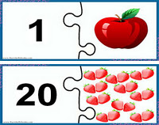

1. Сандарды үйрену.
Сіздің балаңыз нөмірлермен бірге осы түрлі-түсті, көңілді карточкалармен айналысады. Сіз бұл карталарды әртүрлі жарыстарда пайдалана аласыз. Ойындарда сіз балаңызға қалай есептеуді үйрете бастағанда қолданасыз. Карточкалар 1-ден 10-ға дейін.

2. Санап үйрену.Пазлдар "сандар мен есепті зерттейміз".Барлығы: үш картадан тұратын 10 пазл. Бірінші суретте сан, екінші суретте элементтер саны көрсетілген. Сандар мен ұпайларды білу: 1-10. Карточкаларды басып шығарыңыз және ортасында сызық бойымен ақырын кесіңіз. Бала үш жартысын жинауы керек. Санды, осы сандағы объектілердің санын, ал үшінші суретте жазбаша түрінде жазылған санды табу керек.

Жақында сіздің балаңыз мектепке барады, оқиды, эссе жазады, тест тапсырады, үй жұмысын жасайды. Бұл арада сіздің балаңыз маңызды оқиғаға дайындалуы керек. Бүгін біз формаларды зерттейміз.Алғашқы сабақтарыңызды көңілді ойындарға айналдырыңыз. Ол үшін бізге әр түрлі геометриялық фигуралары бар әдемі карталар қажет.Мысалы: үшбұрыш, шеңбер, шаршы, сопақ, тіктөртбұрыш, ромб. Барлығы: 6 карточка
4. Пазлдар мен формалар.
Баланың дамуы үшін тамаша карточкалар. Форманы Үйренеміз. Балаларға арналған пазлдар. Қара ромбадағы фигураны мұқият кесу керек. Және фигуралардың айналасында карталарды мұқият кесіңіз.

Математика сабақтарына арналған керемет карталар. Тегін математикалық карталарды жүктеп алыңыз. Ұсынылған төртеудің ішінен бір қосымша сурет табу керек. Балаға әр суретте қанша зат бейнеленгенін санап, қосымша картаны тауып, осы картада қай фигура басым болатынын біліп алу керек. Көңілді түсті математикалық карталар. Нысандарды санаңыз және мұнда қандай фигура (сурет) артық екенін табыңыз.